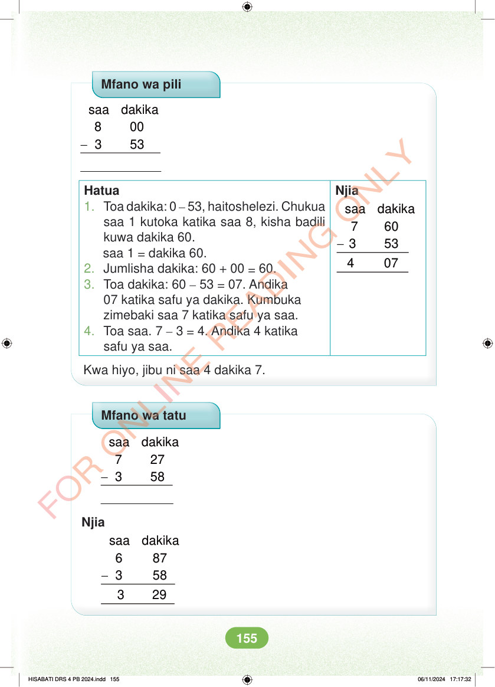

Mfano wa pili - saa dakika 8 00 3 53 Njia - saa dakika 7 60 3 53 4 07 Hatua 1. Toa dakika: 0 – 53, haitoshelezi. Chukua saa 1 kutoka katika saa 8, kisha badili kuwa dakika 60. saa 1 = dakika 60. 2. Jumlisha dakika: 60 + 00 = 60. 3. Toa dakika: 60 – 53 = 07. Andika 07 katika safu ya dakika. Kumbuka zimebaki saa 7 katika safu ya saa. 4. Toa saa. 7 – 3 = 4. Andika 4 katika safu ya saa. Kwa hiyo, jibu ni saa 4 dakika 7. Mfano wa tatu - saa dakika 7 27 3 58 Njia - saa dakika 6 87 3 58 3 29 HISABATI DRS 4 PB 2024.indd 155 HISABATI DRS 4 PB 2024.indd 155 06/11/2024 17:17:32 06/11/2024 17:17:32